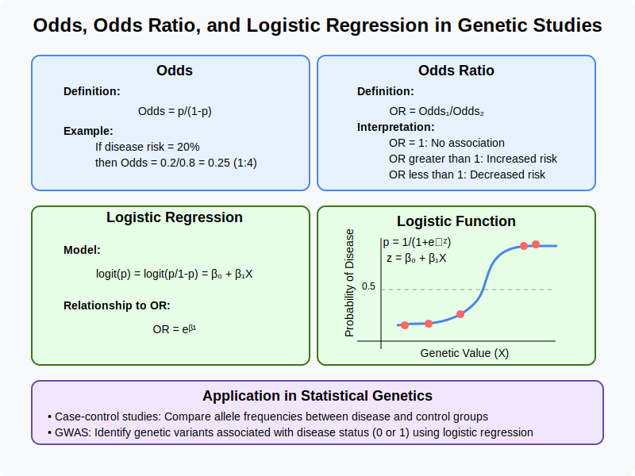

Intuitional Description#
Odds ratio provides an intuitive measure of association strength between genetic variants and binary outcomes (like disease status) by comparing the odds of disease given a particular genotype to the odds without it, while logistic regression extends this concept to model the log-odds of disease as a linear function of genetic markers, allowing for multiple variants and covariates to be analyzed simultaneously.
Graphical Summary#

Key Formula#
In logistic regression for genetic association studies, we model the probability of a binary outcome (e.g., disease status) as a function of genetic markers:
Where:
\(p_i\) is the probability of disease for individual \(i\)
\(\frac{p_i}{1-p_i}\) is the odds of disease for individual \(i\)
\(X_i\) is the genotype for individual \(i\) at a single marker (e.g., coded as 0, 1, 2 for the number of minor alleles)
\(\beta_0\) is the intercept
\(\beta_1\) is the log odds ratio per unit increase in \(X\) (to be estimated)
Technical Details#
Definition of Odds#
The odds for an event with probability \(p\) is defined as:
For example, if the probability of disease is 0.2 (20%), then the odds of disease are \(\frac{0.2}{0.8} = 0.25\), or 1:4.
Definition of Odds Ratio#
The odds ratio compares the odds of disease between two groups. For a genetic variant with genotypes AA, Aa, and aa (where a is the risk allele), the odds ratio for aa vs. AA would be:
In the logistic regression in the Key Formula section, the odds ratio (OR) can be calculated as:
Interpretation in Genetics#
\(\text{OR} = 1\): No association between genotype and disease
\(\text{OR} > 1\): The variant increases disease risk (e.g., OR = 2 means individuals with this genotype have twice the odds of disease)
\(\text{OR} < 1\): The variant decreases disease risk (protective effect)
Example#
This R code demonstrates a genetic association analysis workflow for studying potential relationships between genetic variants and disease status (binary). The key steps include:
Create the genotype and phenotype data for 5 individuals across 3 genetic variants and scale the matrix
Assign disease status to each individual (case/control)
Perform univariate logistic regression for each variant
Calculatie key statistical measures: beta coefficients, odds ratios, standard errors, z-scores, p-values
# Clear the environment
rm(list = ls())
# Define genotypes for 5 individuals at 3 variants
# These represent actual alleles at each position
# For example, Individual 1 has genotypes: CC, CT, AT
genotypes <- c(
"CC", "CT", "AT", # Individual 1
"TT", "TT", "AA", # Individual 2
"CT", "CT", "AA", # Individual 3
"CC", "TT", "AA", # Individual 4
"CC", "CC", "TT" # Individual 5
)
# Reshape into a matrix
N = 5 # number of individuals
M = 3 # number of variants
geno_matrix <- matrix(genotypes, nrow=N, ncol=M, byrow=TRUE)
rownames(geno_matrix) <- paste("Individual", 1:N)
colnames(geno_matrix) <- paste("Variant", 1:M)
alt_alleles <- c("T", "C", "T")
# Convert to raw genotype matrix using the additive / dominant / recessive model
Xraw_additive <- matrix(0, nrow=N, ncol=M) # dount number of non-reference alleles
rownames(Xraw_additive) <- rownames(geno_matrix)
colnames(Xraw_additive) <- colnames(geno_matrix)
for (i in 1:N) {
for (j in 1:M) {
alleles <- strsplit(geno_matrix[i,j], "")[[1]]
Xraw_additive[i,j] <- sum(alleles == alt_alleles[j])
}
}
X <- scale(Xraw_additive, center=TRUE, scale=TRUE)
# assign observed disease status for the 5 individuals (1: case, 0: control)
Y <- c(0, 1, 0, 0, 0)
# Create a data frame for analysis
data <- data.frame(
disease = Y,
variant1 = X[,1],
variant2 = X[,2],
variant3 = X[,3]
)
# Display the data
print("Genotype data and disease status:")
print(data)
[1] "Genotype data and disease status:"
disease variant1 variant2 variant3
Individual 1 0 -0.6708204 0.2390457 0.4472136
Individual 2 1 1.5652476 -0.9561829 -0.6708204
Individual 3 0 0.4472136 0.2390457 -0.6708204
Individual 4 0 -0.6708204 -0.9561829 -0.6708204
Individual 5 0 -0.6708204 1.4342743 1.5652476
# Fit logistic regression models for each variant
# Univariate Logistic Regression Model
beta <- numeric(M)
odds_ratios <- numeric(M)
se_beta <- numeric(M)
z_score <- numeric(M)
p_value <- numeric(M)
for (j in 1:M) {
formula <- as.formula(paste("disease ~", paste0("variant", j)))
model <- glm(formula, data = data, family = binomial())
# Extract coefficient and calculate odds ratio
coef_summary <- summary(model)$coefficients
beta[j] <- coef_summary[2, 1] # Log odds ratio
odds_ratios[j] <- exp(beta[j]) # odds ratio is the exponent of the beta from the regression
se_beta[j] <- coef_summary[2, 2] # Standard error
z_score[j] <- beta[j] / se_beta[j]
p_value[j] <- round(coef_summary[2, 4], 4) # Two-tailed p-value
}
# Create results table
logistic_results <- data.frame(Variant = colnames(X), BETA = beta, OR = odds_ratios, SE = se_beta, Z = z_score, P_Value = p_value)
logistic_results
Warning message:
"glm.fit: fitted probabilities numerically 0 or 1 occurred"
Warning message:
"glm.fit: fitted probabilities numerically 0 or 1 occurred"
Warning message:
"glm.fit: fitted probabilities numerically 0 or 1 occurred"
| Variant | BETA | OR | SE | Z | P_Value |
|---|---|---|---|---|---|
| <chr> | <dbl> | <dbl> | <dbl> | <dbl> | <dbl> |
| Variant 1 | 41.80748 | 1.434685e+18 | 93363.456 | 0.0004477927 | 0.9996 |
| Variant 2 | -16.38677 | 7.643945e-08 | 6425.664 | -0.0025502059 | 0.9980 |
| Variant 3 | -16.53777 | 6.572597e-08 | 7941.816 | -0.0020823666 | 0.9983 |
Supplementary#
Contingency Table Calculation#
For a simple 2×2 contingency table:
Disease |
No Disease |
Total |
|
|---|---|---|---|
Genotype + |
a |
b |
a+b |
Genotype - |
c |
d |
c+d |
Total |
a+c |
b+d |
n |
The odds ratio is calculated as:
Multiple Marker Logistic Regression#
For multiple genetic markers, the model extends to:
Where:
\(X_{ij}\) is the genotype of individual \(i\) at marker \(j\)
\(\beta_j\) is the log odds ratio for marker \(j\) adjusted for all other markers in the model
The odds ratio for marker \(j\) is \(e^{\beta_j}\)
Relationship to Case-Control Studies#
In genetic case-control studies, the odds ratio approximates the relative risk when the disease is rare in the population (rare disease assumption). This makes odds ratios particularly useful in genetic epidemiology for rare diseases.
# Create a contingency table for Variant 1 to manually calculate odds ratio
cat("\n\n--- Contingency Table Analysis for Variant 1 ---\n")
table_v1 <- table(data$variant1, data$disease)
print(table_v1)
# Calculate odds ratio from contingency table
# Note: This is simplified and works best with binary variants
if (nrow(table_v1) >= 2 && ncol(table_v1) == 2) {
a <- table_v1[2, 2] # Genotype present, disease present
b <- table_v1[2, 1] # Genotype present, disease absent
c <- table_v1[1, 2] # Genotype absent, disease present
d <- table_v1[1, 1] # Genotype absent, disease absent
or_manual <- (a * d) / (b * c)
cat("\nManually calculated odds ratio:", round(or_manual, 4), "\n")
} else {
cat("\nCannot calculate manual odds ratio - need 2x2 contingency table\n")
}
--- Contingency Table Analysis for Variant 1 ---
0 1
-0.670820393249937 3 0
0.447213595499958 1 0
1.56524758424985 0 1
Manually calculated odds ratio: NaN
rm(list=ls())
# Simulate genotype and height values
genotype <- c(1, 2, 0,1,2) # Genotypes: 1, 2, 0 represent the number of minor alleles (homozygous, heterozygous, and homozygous major)
trait <- c(1, 1, 0,1,0) # Trait values: 0 (disease absent) and 1 (disease present) for each individual
# Simulate height values for three individuals based on genotypes
n = length(genotype)
data <- data.frame(genotype = genotype, trait = trait)
data
| genotype | trait |
|---|---|
| <dbl> | <dbl> |
| 1 | 1 |
| 2 | 1 |
| 0 | 0 |
| 1 | 1 |
| 2 | 0 |
# Fit a logistic regression model
logit_model <- glm(trait ~ genotype, data = data, family = "binomial")
# Summarize the model
summary(logit_model)
# Calculate the odds ratio (exp(coef)) for the genotype variable
odds_ratio <- exp(coef(logit_model)[2])
odds_ratio
Call:
glm(formula = trait ~ genotype, family = "binomial", data = data)
Coefficients:
Estimate Std. Error z value Pr(>|z|)
(Intercept) -0.3025 1.7188 -0.176 0.860
genotype 0.6050 1.2597 0.480 0.631
(Dispersion parameter for binomial family taken to be 1)
Null deviance: 6.7301 on 4 degrees of freedom
Residual deviance: 6.4907 on 3 degrees of freedom
AIC: 10.491
Number of Fisher Scoring iterations: 4